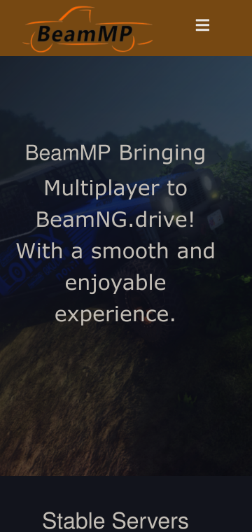
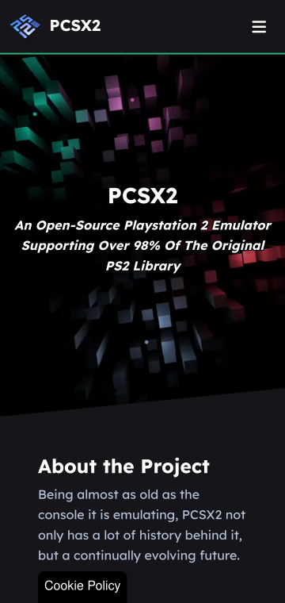
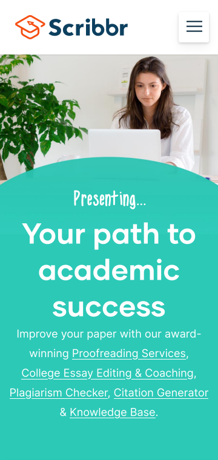

Hick's Law
BeamMP
https://beammp.com/
Here we see how Hick's law is used to help users better navigate the website. Mobile users do not want to download PC software on their phone, so that option is removed, instead offering easy access to important information such as the wiki, forums, or server lists.
Repetition
PCSX2
https://pcsx2.net/
The PCSX2 team demonstrats good design principles through their use of repetition in the design of their new website. The colors are are repeated to keep a sens of cohesion, and similar shapes and styles are used throughout the website.
Proximity
Scribbr
https://www.scribbr.com/
When designing a website, you want to keep visitors from getting lost. Scribbr does this well by putting links to their popular online tools all together right up and center on the page, with 'success' in big bold lettering. This not only serves as another form of navigation, but also advertises their services as a path to success.